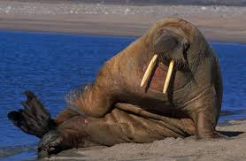

'Twas brillig, and the slithy toves
Did gyre and gimble in the wabe:
All mimsy were the borogoves,
And the mome raths outgrabe.
'Beware the Jabberwock, my son!
The jaws that bite, the claws that catch!
Beware the Jubjub bird, and shun
The frumious Bandersnatch!'
He took his vorpal sword in hand:
Long time the manxome foe he sought --
So rested he by the Tumtum tree,
And stood a while in thought.
And, as in uffish thought he stood,
The Jabberwock, with eyes of flame,
Came whiffling through the tulgey wood,
And burbled as it came!
One two! One two! And through and through
The
vorpal
blade went snicker-snack!
He left it dead, and with its head
He went galumphing back.
'And hast thou slain the Jabberwock?
Come to my arms, my beamish boy!
Oh frabjous day! Callooh! Callay!'
He chortled in his joy.
'Twas brillig, and the slithy toves
Did gyre and gimble in the wabe:
All mimsy were the borogoves,
And the mome raths outgrabe.
The Walrus and the Carpenter
The sun was shining on the sea,
Shining with all his might:
He did his very best to make
The billows smooth and bright --
And this was odd, because it was
The middle of the night.
The moon was shining sulkily,
Because she thought the sun
Had got no business to be there
After the day was done --
'It's very rude of him.' she said,
'To come and spoil the fun!'
The sea was wet as wet could be,
The sands were dry as dry.
You could not see a cloud, because
No cloud was in the sky:
No birds were flying overhead --
There were no birds to fly.
The Walrus and the Carpenter
Were walking close at hand:
They wept like anything to see
Such quantities of sand:
'If this were only cleared away,'
They said, 'it would be grand.'
'If seven maids with seven mops
Swept it for half a year,
Do you suppose,' the Walrus said,
'That they could get it clear?'
'l doubt it,' said the Carpenter,
And shed a bitter tear.
'O Oysters, come and walk with us!
The Walrus did beseech.
'A pleasant walk, a pleasant talk,
Along the briny beach:
We cannot do with more than four,
To give a hand to each.'
The eldest Oyster looked at him,
But never a word he said:
The eldest Oyster winked his eye,
And shook his heavy head --
Meaning to say he did not choose
To leave the oyster-bed.
Out four young Oysters hurried up.
All eager for the treat:
Their coats were brushed, their faces washed,
Their shoes were clean and neat --
And this was odd, because, you know,
They hadn't any feet.
Four other Oysters followed them,
And yet another four;
And thick and fast they came at last,
And more, and more, and more --
All hopping through the frothy waves,
And scrambling to the shore.
The Walrus and the Carpenter

Walked on a mile or so,
And then they rested on a rock
Conveniently low:
And all the little Oysters stood
And waited in a row.
'The time has come,' the Walrus said,
'To talk of many things:
Of shoes -- and ships -- and sealing wax --
Of cabbages -- and kings --
And why the sea is boiling hot --
And whether pigs have wings.'
'But wait a bit,' the Oysters cried,
'Before we have our chat;
For some of us are out of breath,
And all of us are fat!'
'No hurry!' said the Carpenter.
They thanked him much for that.
'A loaf of bread,' the Walrus said,
'Is what we chiefly need:
Pepper and vinegar besides
Are very good indeed --
Now, if you're ready, Oysters dear,
We can begin to feed.'
'But not on us!' the Oysters cried,
Turning a little blue.
'After such kindness, that would be
A dismal thing to do!'
'The night is fine,' the Walrus said,
'Do you admire the view?'
'It was so kind of you to come!
And you are very nice!'
The Carpenter said nothing but
'Cut us another slice-
I wish you were not quite so deaf-
I've had to ask you twice!'
'It seems a shame,' the Walrus said,
'To play them such a trick.
After we've brought them out so far,
And made them trot so quick!'
The Carpenter said nothing but
'The butter's spread too thick!'
'I weep for you,'the Walrus said:
'I deeply sympathize.'
With sobs and tears he sorted out
Those of the largest size,
Holding his pocket-handkerchief
Before his streaming eyes.
{kind=link}